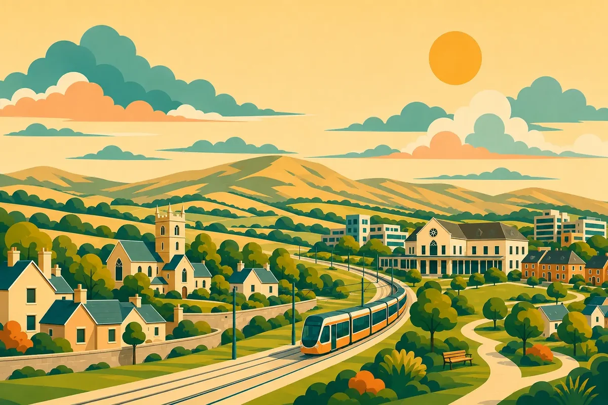

Case study 01 / Community information
Saggart & Citywest Together
A shared starting point for local knowledge, practical support and taking part in community life.

The need
Who is it for?
Newcomers and established residents in Saggart and Citywest.
Useful local information is spread across services, community groups and public sources. A newcomer may need practical support while also wanting to understand the place and find ways to take part.
The approach
A way into the subject.
Bring those needs together in a local guide. Organise information around everyday questions, keep links to original sources, and connect practical signposting with history, local imagery and community activities.
The experience
What people can do.
- 01
Find a starting point
A services directory and practical signposting connect visitors to the organisations responsible for information and support.
- 02
Learn about the place
Local history, a gallery and a knowledge quiz offer ways to explore the area and its shared stories.
- 03
Take part
Community information and contact routes connect browsing with opportunities to participate. Translation controls offer another way into the content.
Learning & next steps
What this demonstrates.
The design brings information, learning and participation into one local experience. It shows how a community organisation can make its knowledge easier to explore and maintain.
The next evaluation priority is to test whether residents can find relevant support and participation opportunities, and agree a regular review process for local information.
Independently compiled local information. Service providers remain the source for current eligibility and availability.
Explore Saggart & Citywest TogetherA useful next step
Tell me what you’re
working on.
A community website, a learning resource or a research question. Start with the people you want to reach and the problem you want to solve.
Email Sam samobrienolinger@gmail.comIf you have a brief, include your audience, timeline and available budget.